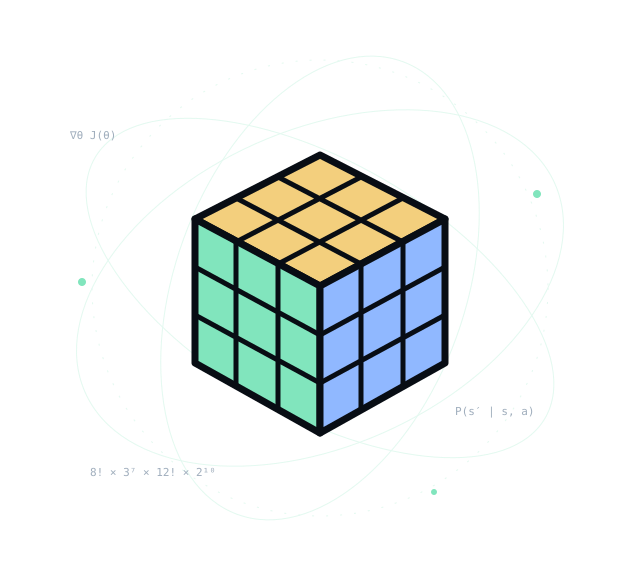

Change the state.
Face names refer to Up, Down, Left, Right, Front, and Back. A turn is clockwise when looking directly at that face. A prime (′) reverses it.
Mithilesh / interactive experiments
Turn a face. Watch a permutation. Follow an idea.
A small playground for the mathematics behind the next move.

Real sticker permutations. Quarter turns, inverse turns, and the option to retrace every move back to the start.
Repeat six times to return every sticker to its starting position.
A geometric illustration of tetrahedral symmetry.
Your next move goes here.
Face names refer to Up, Down, Left, Right, Front, and Back. A turn is clockwise when looking directly at that face. A prime (′) reverses it.
Undo reverses the last move. Reverse moves retraces this session in reverse order; it is a history reversal, rather than a general-purpose solver.
Focus the canvas to use U, D, L, R, F, B. Hold Shift for a prime turn. Arrow keys rotate the view; Home restores the camera. All controls also work with Tab and Enter.
The 3×3 state space combines corner and edge permutations and orientations. Legal moves preserve constraints — a useful lens for thinking about policy spaces.
2×2, 3×3, 4×4, and 5×5 share the same geometric engine. Bigger cubes add centers and edge pieces; wide turns move two layers at once.
Pyraminx explores tetrahedral symmetry. Clock explores modular time through a coupled-dial illustration. Their kinetic previews complement the playable cube models.